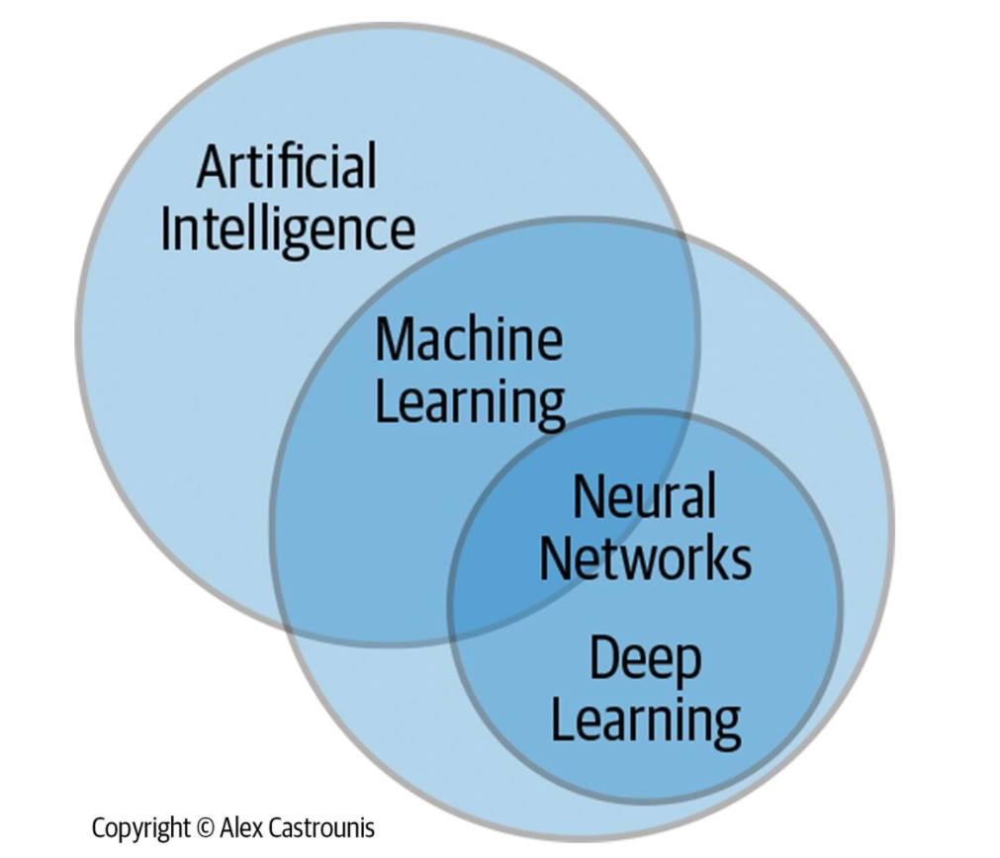
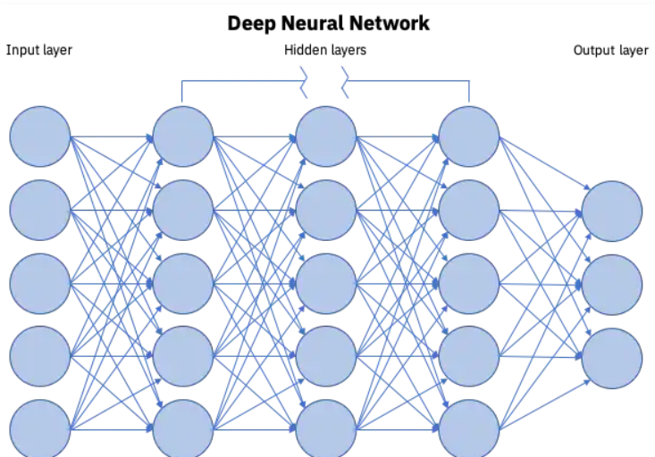

information
What is AI?
AI is a set of concepts, tools, and techniques that represents huge disruptive and transformative potential. Definition- wise, we can think of AI simply as intelligence exhibited by machines that can be used in a beneficial way (e.g., carrying out tasks, making decisions, assisting humans, saving lives). More specifically, AI describes when a machine is able to learn from information (data), generate some degree of understanding, and then use the knowledge learned to do something. AI includes machine learning and specific techniques such as deep learning as subsets.

Advantages and benefits of AI
Making decisions and taking action based solely on historical precedent, simple analytics, and gut feel
no longer gets the job done—nor does pursuing near-sighted goals or commoditized technologies. And yet, too many businesses remain
mired in the status quo. More and more, it’s those that effectively use analytics who succeed; that is, those that extract information
such as patterns, trends, and insights from data in order to make decisions, take actions, and produce outcomes. This includes both
traditional analytics and advanced analytics, which are complementary. Also, AI allows humans to use analytics in ways they would
otherwise not be able to on their own.
Data is a core advantage if, and only if, you know how to use it. Most companies should begin to think of themselves as data and analytics
companies, regardless of what their core offerings are. As long as data is involved, this is a critical step in getting ahead of the
competition while also gaining an increased ability to create huge benefits for both people and business.
Some highly beneficial and advanced applications of AI include helping blind and visually disabled people “see” and cardiovascular
disease assessment and prediction of risk factors from retinal scan images.
What is machine learning?
Machine learning is the process that powers many of the services we use today—recommendation systems
like those on Netflix, YouTube, and Spotify; search engines like Google and Baidu; social-media feeds like Facebook and Twitter;
voice assistants like Siri and Alexa. The list goes on.

In all of these instances, each platform is collecting as much data about you as possible—what genres you like watching, what links
you are clicking, which statuses you are reacting to—and using machine learning to make a highly educated guess about what you might
want next. Or, in the case of a voice assistant, about which words match best with the funny sounds coming out of your mouth.
Frankly, this process is quite basic: find the pattern, apply the pattern. But it pretty much runs the world.That’s in big part thanks
to an invention in 1986, courtesy of Geoffrey Hinton, today known as the father of deep learning.
What is deep learning?
Deep learning is a machine learning technique that teaches computers to do what comes naturally to humans: learn by example. Deep learning is a key technology behind driverless cars, enabling them to recognize a stop sign, or to distinguish a pedestrian from a lamppost. It is the key to voice control in consumer devices like phones, tablets, TVs, and hands-free speakers. Deep learning is getting lots of attention lately and for good reason. It’s achieving results that were not possible before.
In deep learning, a computer model learns to perform classification tasks directly from images, text, or sound. Deep learning models can achieve state-of-the-art accuracy, sometimes exceeding human-level performance. Models are trained by using a large set of labeled data and neural network architectures that contain many layers.
What is Neural Networks?
Neural networks, also known as artificial neural networks (ANNs) or simulated neural networks (SNNs),
are a subset of machine learning and are at the heart of deep learning algorithms. Their name and structure are inspired by the
human brain, mimicking the way that biological neurons signal to one another.
Artificial neural networks (ANNs) are comprised of a node layers, containing an input layer, one or more hidden layers, and an output layer.
Each node, or artificial neuron, connects to another and has an associated weight and threshold. If the output of any individual node is
above the specified threshold value, that node is activated, sending data to the next layer of the network. Otherwise, no data is passed
along to the next layer of the network.
